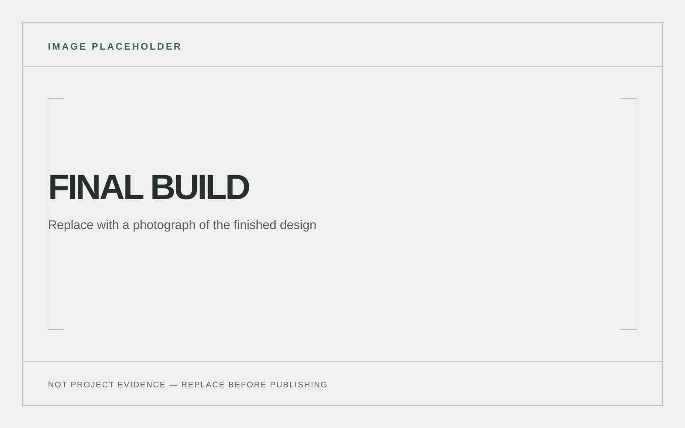

← Back to 1989–94 Ford Capri
Project
Quadlock Compatible Phone Mount
A Quadlock compatible phone mount for the Ford Capri.
Project overview
A Quadlock compatible phone mount for the Ford Capri.
- Completed
- [ADD COMPLETION DATE]
- Tools
- [ADD TOOLS USED]

Design & development
[ADD DESIGN DECISIONS, BUILD DETAILS AND TESTING.]